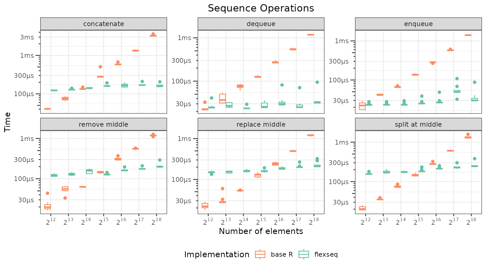
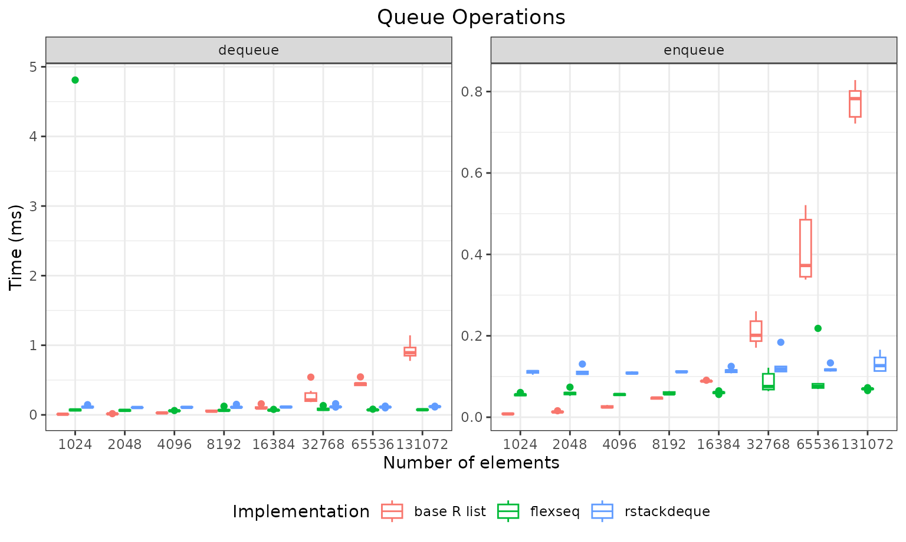
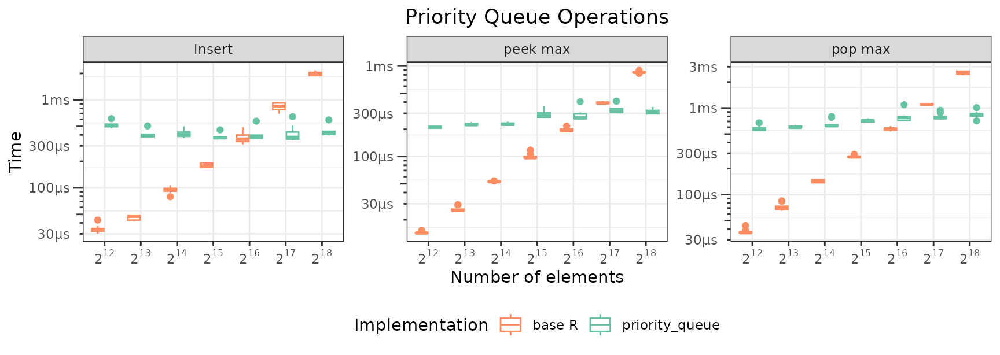
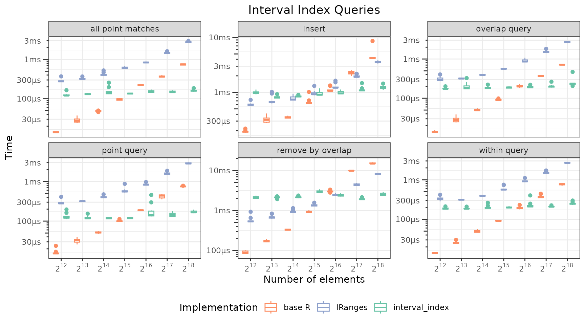

Method
This article measures individual operation times for each collection
type provided by immutables. Each recorded repetition
rebuilds the fixture for size n, then uses
microbenchmark(..., times = 1) to time one operation on
that fresh state.
The numbers shown below are loaded from cached results shipped with
the package; re-running
data-raw/generate_publication_results.R regenerates them.
See the script’s header for runtime and options.
Comparisons use base R implementations and select structures from
rstackdeque and IRanges:
- Sequences and queue operations:
-
Priority operations:
- immutables:
priority_queue() - base R: parallel value and priority vectors with
which.min()/which.max()
- immutables:
-
Interval operations:
- immutables:
interval_index() - base R:
data.framewith start/end columns, filtered with vectorized comparisons -
IRanges:IRanges()
- immutables:
Sequence operations
Seven operations on sequences of 1,024 to 131,072 elements. Append, prepend, concatenate, and split exploit the finger tree’s O(log n) structural sharing; get, replace, and remove at the middle exercise index-based splitting.
repeats <- 6L
sequence_sizes <- 2^(10 + 0:6)
rows <- flexseq()
for(n in sequence_sizes) {
cat("Sequence ops, size ", n, "\n")
vals <- function() as.list(sprintf("v_%06d", seq_len(n)))
mid <- as.integer(n / 2)
flex_setup <- function() list(s = as_flexseq(vals()), mid = mid)
list_setup <- function() list(s = vals(), mid = mid)
pair_flex <- function() list(a = as_flexseq(vals()), b = as_flexseq(vals()))
pair_list <- function() list(a = vals(), b = vals())
rows <- bench_one(rows, "flexseq", "append", n, repeats, flex_setup,
function(st) push_back(st$s, "z"))
rows <- bench_one(rows, "flexseq", "prepend", n, repeats, flex_setup,
function(st) push_front(st$s, "z"))
rows <- bench_one(rows, "flexseq", "get middle", n, repeats, flex_setup,
function(st) st$s[[st$mid]])
rows <- bench_one(rows, "flexseq", "replace middle", n, repeats, flex_setup,
function(st) { s <- st$s; s[[st$mid]] <- "y"; s })
rows <- bench_one(rows, "flexseq", "remove middle", n, repeats, flex_setup,
function(st) pop_at(st$s, st$mid)$remaining)
rows <- bench_one(rows, "flexseq", "concatenate", n, repeats, pair_flex,
function(st) c(st$a, st$b))
rows <- bench_one(rows, "flexseq", "split at middle", n, repeats, flex_setup,
function(st) split_at(st$s, st$mid))
rows <- bench_one(rows, "base R list", "append", n, repeats, list_setup,
function(st) c(st$s, list("z")))
rows <- bench_one(rows, "base R list", "prepend", n, repeats, list_setup,
function(st) c(list("z"), st$s))
rows <- bench_one(rows, "base R list", "get middle", n, repeats, list_setup,
function(st) st$s[[st$mid]])
rows <- bench_one(rows, "base R list", "replace middle", n, repeats, list_setup,
function(st) { s <- st$s; s[[st$mid]] <- "y"; s })
rows <- bench_one(rows, "base R list", "remove middle", n, repeats, list_setup,
function(st) st$s[-st$mid])
rows <- bench_one(rows, "base R list", "concatenate", n, repeats, pair_list,
function(st) c(st$a, st$b))
rows <- bench_one(rows, "base R list", "split at middle", n, repeats, list_setup,
function(st) list(
left = st$s[seq_len(st$mid - 1L)],
value = st$s[[st$mid]],
right = st$s[(st$mid + 1L):n]
))
}
results_list$sequence <- do.call(rbind, as.list(rows))
if(!is.null(results_list$sequence)) {
seq_results <- results_list$sequence
seq_results$time_ms <- seq_results$time_us / 1000
sorted_sizes <- sort(unique(seq_results$n))
pow_labels <- lapply(sorted_sizes, function(s) bquote(2^.(log2(s)))) |> as.character()
seq_results$n_cat <- factor(seq_results$n, levels = sorted_sizes)
p_sequence <- ggplot(seq_results, aes(x = n_cat, y = time_ms, color = impl)) +
geom_point(position = position_jitter(width = 0.15, height = 0)) +
facet_wrap(~ op, scales = "free_y") +
scale_x_discrete(labels = pow_labels) +
labs(
title = "Sequence Operations",
x = "Number of elements",
y = "Time (ms)",
color = "Implementation"
) +
theme_bw() +
theme(plot.title = element_text(hjust = 0.5), legend.position = "bottom")
print(p_sequence)
} else {
knitr::asis_output("*Benchmark results not yet generated. Run `data-raw/generate_publication_results.R` to populate.*")
}
Queue operations
FIFO enqueue (push to back) and dequeue (pop from front) compared
across flexseq, rstackdeque, and base R lists.
Both flexseq and rstackdeque provide O(log n)
or amortized O(1) queue operations; base R’s c() and
[-1] are O(n).
queue_sizes <- 2^(10 + 0:7)
rows <- flexseq()
for(n in queue_sizes) {
items <- function() as.list(rep("queue_item", n))
flex_setup <- function() list(q = as_flexseq(items()))
rsd_setup <- function() list(q = rstackdeque::as.rpqueue(items()))
list_setup <- function() list(q = items())
rows <- bench_one(rows, "flexseq", "enqueue", n, repeats, flex_setup,
function(st) push_back(st$q, "d"))
rows <- bench_one(rows, "flexseq", "dequeue", n, repeats, flex_setup,
function(st) pop_front(st$q)$remaining)
rows <- bench_one(rows, "rstackdeque", "enqueue", n, repeats, rsd_setup,
function(st) rstackdeque::insert_back(st$q, "d"))
rows <- bench_one(rows, "rstackdeque", "dequeue", n, repeats, rsd_setup,
function(st) rstackdeque::without_front(st$q))
rows <- bench_one(rows, "base R list", "enqueue", n, repeats, list_setup,
function(st) c(st$q, list("d")))
rows <- bench_one(rows, "base R list", "dequeue", n, repeats, list_setup,
function(st) st$q[-1L])
}
results_list$queue <- do.call(rbind, as.list(rows))
if(!is.null(results_list$queue)) {
queue_results <- results_list$queue
queue_results$time_ms <- queue_results$time_us / 1000
queue_results$n_cat <- factor(queue_results$n, levels = sort(unique(queue_results$n)))
p_queue <- ggplot(queue_results, aes(x = n_cat, y = time_ms, color = impl)) +
geom_boxplot() +
facet_wrap(~ op, scales = "free_y") +
labs(
title = "Queue Operations",
x = "Number of elements",
y = "Time (ms)",
color = "Implementation"
) +
theme_bw() +
theme(plot.title = element_text(hjust = 0.5), legend.position = "bottom")
print(p_queue)
} else {
knitr::asis_output("*Benchmark results not yet generated.*")
}
Priority queue operations
Insert, peek, and pop operations for min and max priority. The base R
baseline stores values and priorities as parallel vectors and uses
which.min() / which.max() for queries, so
those reads are O(n) per call. priority_queue maintains a
sorted finger tree with cached min/max monoids, giving O(log n) insert
and pop.
pq_sizes <- c(100, 500, 1000, 5000, 10000, 50000)
rows <- flexseq()
set.seed(42)
max_pq <- max(pq_sizes)
all_pq_vals <- sprintf("val_%06d", seq_len(max_pq))
all_pq_pri <- runif(max_pq)
for(n in pq_sizes) {
pv <- as.list(all_pq_vals[seq_len(n)])
pw <- all_pq_pri[seq_len(n)]
pq_setup <- function() list(pq = as_priority_queue(pv, priorities = pw))
base_setup <- function() list(v = all_pq_vals[seq_len(n)], p = pw)
rows <- bench_one(rows, "priority_queue", "insert", n, repeats, pq_setup,
function(st) insert(st$pq, "val_new", 0.5))
rows <- bench_one(rows, "priority_queue", "peek min", n, repeats, pq_setup,
function(st) peek_min(st$pq))
rows <- bench_one(rows, "priority_queue", "pop min", n, repeats, pq_setup,
function(st) pop_min(st$pq)$remaining)
rows <- bench_one(rows, "priority_queue", "peek max", n, repeats, pq_setup,
function(st) peek_max(st$pq))
rows <- bench_one(rows, "priority_queue", "pop max", n, repeats, pq_setup,
function(st) pop_max(st$pq)$remaining)
rows <- bench_one(rows, "base R", "insert", n, repeats, base_setup,
function(st) list(values = c(st$v, "val_new"), priorities = c(st$p, 0.5)))
rows <- bench_one(rows, "base R", "peek min", n, repeats, base_setup,
function(st) st$v[which.min(st$p)])
rows <- bench_one(rows, "base R", "pop min", n, repeats, base_setup,
function(st) { i <- which.min(st$p); list(values = st$v[-i], priorities = st$p[-i]) })
rows <- bench_one(rows, "base R", "peek max", n, repeats, base_setup,
function(st) st$v[which.max(st$p)])
rows <- bench_one(rows, "base R", "pop max", n, repeats, base_setup,
function(st) { i <- which.max(st$p); list(values = st$v[-i], priorities = st$p[-i]) })
}
results_list$pq <- do.call(rbind, as.list(rows))
if(!is.null(results_list$pq)) {
pq_results <- results_list$pq
pq_results$time_ms <- pq_results$time_us / 1000
pq_medians <- aggregate(time_us ~ impl + op + n, data = pq_results, FUN = median)
pq_medians$time_ms <- pq_medians$time_us / 1000
p_pq <- ggplot(pq_results, aes(x = n, y = time_ms, color = impl)) +
geom_point(alpha = 0.25, size = 1.2, position = position_jitter(width = 0.03)) +
geom_line(data = pq_medians, linewidth = 0.6) +
geom_point(data = pq_medians, size = 1.8) +
facet_wrap(~ op, scales = "free_y") +
scale_x_log10(labels = scales::label_comma()) +
scale_y_log10(labels = scales::label_comma()) +
labs(
title = "Priority Queue Operations",
x = "Number of elements",
y = "Time (ms)",
color = "Implementation"
) +
theme_bw() +
theme(plot.title = element_text(hjust = 0.5), legend.position = "bottom")
print(p_pq)
} else {
knitr::asis_output("*Benchmark results not yet generated.*")
}
Interval queries
Insert and three query types (single-point lookup, all-point matches,
and range overlap) on a collection of intervals with integer endpoints.
The base R baseline stores intervals in a data.frame and
filters with vectorized comparisons, which is simple and fast for small
n but O(n) per query. interval_index uses an
augmented finger tree for O(log n + k) queries, where k is the
number of matches.
ivx_sizes <- c(100, 500, 1000, 5000, 10000, 50000)
rows <- flexseq()
set.seed(123)
max_ivx <- max(ivx_sizes)
all_starts <- sort(sample.int(max_ivx * 10L, max_ivx))
all_widths <- sample.int(100L, max_ivx, replace = TRUE)
all_ends <- all_starts + all_widths
all_vals <- sprintf("interval_%06d", seq_len(max_ivx))
qpt <- all_starts[as.integer(max_ivx / 2)] + 10L
qlo <- all_starts[as.integer(max_ivx * 0.4)]
qhi <- all_starts[as.integer(max_ivx * 0.5)]
ins_s <- all_starts[as.integer(max_ivx / 2)]
ins_e <- ins_s + 50L
has_iranges <- requireNamespace("IRanges", quietly = TRUE) &&
requireNamespace("S4Vectors", quietly = TRUE)
for(n in ivx_sizes) {
starts <- all_starts[seq_len(n)]
ends <- all_ends[seq_len(n)]
vals <- all_vals[seq_len(n)]
ivx_setup <- function() list(ix = as_interval_index(as.list(vals), start = starts, end = ends, default_query_bounds = "[]"))
df_setup <- function() list(df = data.frame(start = starts, end = ends, value = vals, stringsAsFactors = FALSE))
rows <- bench_one(rows, "interval_index", "insert", n, repeats, ivx_setup,
function(st) insert(st$ix, "interval_new", ins_s, ins_e))
rows <- bench_one(rows, "interval_index", "point query", n, repeats, ivx_setup,
function(st) peek_point(st$ix, qpt, bounds = "[]"))
rows <- bench_one(rows, "interval_index", "all point matches", n, repeats, ivx_setup,
function(st) peek_all_point(st$ix, qpt, bounds = "[]"))
rows <- bench_one(rows, "interval_index", "overlap query", n, repeats, ivx_setup,
function(st) peek_all_overlaps(st$ix, qlo, qhi, bounds = "[]"))
rows <- bench_one(rows, "base R", "insert", n, repeats, df_setup,
function(st) rbind(st$df, data.frame(start = ins_s, end = ins_e, value = "interval_new", stringsAsFactors = FALSE)))
rows <- bench_one(rows, "base R", "point query", n, repeats, df_setup,
function(st) {
hits <- which(st$df$start <= qpt & qpt <= st$df$end)
if(length(hits)) st$df$value[hits[1L]] else NULL
})
rows <- bench_one(rows, "base R", "all point matches", n, repeats, df_setup,
function(st) st$df[st$df$start <= qpt & qpt <= st$df$end, , drop = FALSE])
rows <- bench_one(rows, "base R", "overlap query", n, repeats, df_setup,
function(st) st$df[st$df$start <= qhi & st$df$end >= qlo, , drop = FALSE])
if(has_iranges) {
ir_setup <- function() list(
ir = IRanges::IRanges(start = starts, end = ends),
v = vals
)
rows <- bench_one(rows, "IRanges", "insert", n, repeats, ir_setup,
function(st) list(
ir = c(st$ir, IRanges::IRanges(start = ins_s, end = ins_e)),
v = c(st$v, "interval_new")
))
rows <- bench_one(rows, "IRanges", "point query", n, repeats, ir_setup,
function(st) {
hits <- S4Vectors::subjectHits(IRanges::findOverlaps(IRanges::IRanges(start = qpt, width = 1L), st$ir))
if(length(hits)) st$v[hits[1L]] else NULL
})
rows <- bench_one(rows, "IRanges", "all point matches", n, repeats, ir_setup,
function(st) {
st$v[S4Vectors::subjectHits(IRanges::findOverlaps(IRanges::IRanges(start = qpt, width = 1L), st$ir))]
})
rows <- bench_one(rows, "IRanges", "overlap query", n, repeats, ir_setup,
function(st) {
st$v[S4Vectors::subjectHits(IRanges::findOverlaps(IRanges::IRanges(start = qlo, end = qhi), st$ir))]
})
}
}
results_list$ivx <- do.call(rbind, as.list(rows))
if(!is.null(results_list$ivx)) {
ivx_results <- results_list$ivx
ivx_results$time_ms <- ivx_results$time_us / 1000
ivx_medians <- aggregate(time_us ~ impl + op + n, data = ivx_results, FUN = median)
ivx_medians$time_ms <- ivx_medians$time_us / 1000
p_ivx <- ggplot(ivx_results, aes(x = n, y = time_ms, color = impl)) +
geom_point(alpha = 0.25, size = 1.2, position = position_jitter(width = 0.03)) +
geom_line(data = ivx_medians, linewidth = 0.6) +
geom_point(data = ivx_medians, size = 1.8) +
facet_wrap(~ op, scales = "free_y") +
scale_x_log10(labels = scales::label_comma()) +
scale_y_log10(labels = scales::label_comma()) +
labs(
title = "Interval Index Queries",
x = "Number of elements",
y = "Time (ms)",
color = "Implementation"
) +
theme_bw() +
theme(plot.title = element_text(hjust = 0.5), legend.position = "bottom")
print(p_ivx)
} else {
knitr::asis_output("*Benchmark results not yet generated.*")
}